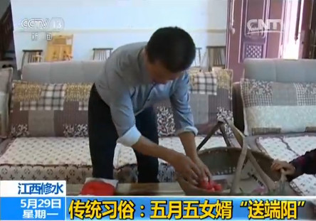

搜索
湖南：千人诵《离骚》传统习俗样式多
在湖南岳阳，近千名市民和学生身穿汉服共吟《离骚》，祭祀屈原。
而在湖南湘南地区的瑶族同胞则有采“风药”，佩香囊等习俗。据了解，端午节用这些“风药”熬水洗澡能够达到治病强身的效果。
江西修水：传统习俗：五月五女婿“送端阳”
在江西九江的修水县，端午节又称为“女婿节”，每年农历五月初五端午节这一天，女婿们都要备上猪肉、包子、咸鸭蛋、面条等礼品，给岳父母“送端阳”，以表达尊敬感激之意。
江苏泗阳：传统端午节 浓浓文化味
在江苏泗阳，端午节期间当地举办了丰富多彩的文化活动。在泗阳县文化馆一场极具地方特色的淮海小戏，让孩子们欣赏到独特的传统文化。 过足戏瘾，有兴趣的孩子还能学着唱淮海戏，不少家长表示，这样的端午假期，过得有意义，有乐趣。